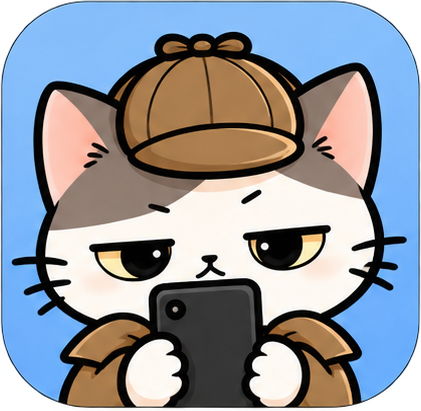
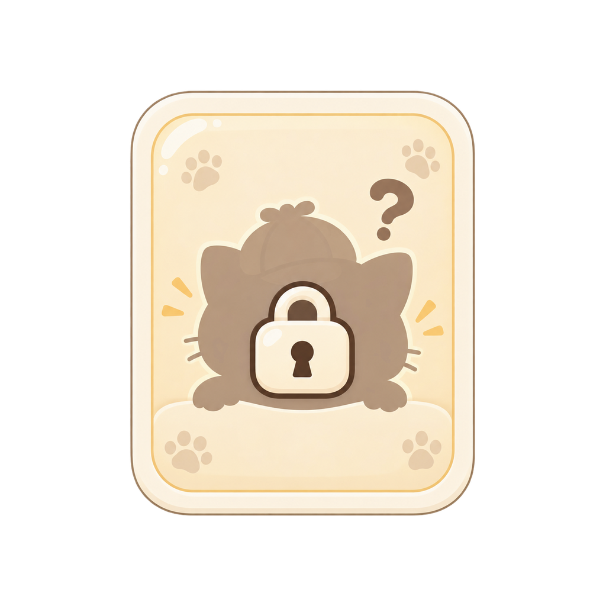

<!doctype html>
<html lang="ko">
<head>
<meta charset="utf-8">
<meta name="viewport" content="width=device-width,initial-scale=1,viewport-fit=cover">
<title>또 열었네?</title>
<style>
:root{
  --bg:#F7F1E7;--paper:#FFFEFB;--ink:#2F2A27;--muted:#8E8177;--brown:#9C7A5D;
  --normal:#D9D9D9;--rare:#70BFFF;--epic:#A86CFF;--legend:#FFD166;--hidden:#082B3B;
  --radius:24px;--shadow:0 12px 34px rgba(80,62,48,.11);--line:#E9DED1
}
*{box-sizing:border-box}html,body{margin:0;min-height:100%;background:var(--bg);color:var(--ink);font-family:-apple-system,BlinkMacSystemFont,"Noto Sans KR","Noto Sans JP",sans-serif}
body{background:radial-gradient(circle at 12% 4%,#fff9f1 0 14%,transparent 30%),var(--bg)}button{font:inherit}.app{max-width:720px;margin:0 auto;padding:calc(16px + env(safe-area-inset-top)) 18px calc(90px + env(safe-area-inset-bottom))}
/* v0.24: onboarding (see onboardScreen()/render() below). The two
   onboarding images are full-screen 941x1672 compositions with their own
   baked-in buttons -- per design's own handoff note, these are visual
   comps only; real tap targets are transparent buttons laid over them in
   code, positioned as % of the image's own box so they track the art
   exactly regardless of device aspect ratio. `.app.onboard` drops the
   normal page padding so the art can go edge-to-edge. */
.app.onboard{padding:0;max-width:none}
.onboard-frame{position:fixed;inset:0;overflow:hidden;background:#F7F1E7;z-index:20}
.onboard-box{position:absolute;top:0;left:50%;height:100%;aspect-ratio:941/1672;transform:translateX(-50%)}
.onboard-box img{display:block;width:100%;height:100%}
.onboard-hit{position:absolute;border:0;background:transparent;padding:0;-webkit-tap-highlight-color:transparent}
.brand{display:flex;align-items:center;gap:13px}.avatar{width:68px;height:68px;border-radius:22px;object-fit:cover;border:2px solid #E7D9C8;background:#DCEAFF;box-shadow:0 5px 18px rgba(80,60,40,.08)}
.brand-main{flex:1}.brand h1{font-size:30px;margin:0;letter-spacing:-1.8px;line-height:1}.brand .sub{font-size:13px;color:var(--muted);margin-top:7px}.lang{border:1px solid var(--line);background:#fff;border-radius:14px;padding:8px 10px;font-weight:900;color:#665B53}.date{font-size:12px;color:var(--muted);margin:12px 2px 0}
.permission,.empty{background:var(--paper);border:1px solid var(--line);border-radius:var(--radius);padding:22px;margin-top:22px;box-shadow:var(--shadow)}.permission h2{margin:0 0 8px}.permission p{font-size:14px;line-height:1.6;color:var(--muted)}
.primary{border:0;border-radius:16px;padding:14px 18px;background:#6758F5;color:white;font-weight:900;width:100%;margin-top:14px;box-shadow:0 8px 18px rgba(103,88,245,.2)}
.tabs{display:grid;grid-template-columns:repeat(3,1fr);gap:8px;margin-top:17px;background:#ECE3D7;padding:5px;border-radius:18px}.tab{border:0;background:transparent;padding:10px 8px;border-radius:13px;color:#796D65;font-weight:800}.tab.active{background:white;color:#332C28;box-shadow:0 3px 12px rgba(70,50,35,.09)}
.hero{margin-top:17px;background:linear-gradient(135deg,#FFF9F0 0%,#EFE1CE 100%);border:1px solid #EADAC5;border-radius:27px;padding:17px;display:flex;align-items:center;justify-content:space-between;overflow:hidden;min-height:124px;position:relative}.hero:after{content:"";position:absolute;right:120px;bottom:-32px;width:90px;height:90px;border-radius:50%;background:rgba(255,255,255,.42)}.hero img{width:132px;height:96px;object-fit:cover;object-position:50% 10%;border-radius:19px;position:relative;z-index:1}.hero h2{margin:0;font-size:21px;letter-spacing:-.8px}.hero p{margin:7px 0 0;color:var(--muted);font-size:13px;line-height:1.55;max-width:310px}
.daily-strip{display:grid;grid-template-columns:repeat(4,1fr);gap:7px;margin-top:11px}.mini-stat{background:rgba(255,255,255,.72);border:1px solid var(--line);border-radius:15px;padding:10px 7px;text-align:center}.mini-stat b{display:block;font-size:17px}.mini-stat span{font-size:10px;color:var(--muted)}
.section-title{display:flex;align-items:end;justify-content:space-between;margin:24px 2px 10px}.section-title h2{margin:0;font-size:20px;letter-spacing:-.7px}.count{font-size:12px;color:var(--muted)}
.card{position:relative;border-radius:28px;padding:0;margin:13px 0;background:#fff;border:2px solid var(--border);box-shadow:var(--shadow);overflow:hidden;isolation:isolate}.card:before{content:"";position:absolute;inset:0;background:var(--glow);opacity:.33;pointer-events:none;z-index:-2}.card:after{content:"";position:absolute;inset:5px;border-radius:22px;border:1px solid rgba(255,255,255,.55);pointer-events:none;z-index:4}.card-pattern{position:absolute;inset:0;z-index:-1;opacity:.16;background-size:cover;background-position:center;pointer-events:none}.hidden .card-pattern{opacity:.3}
/* v0.27: "노멀/레어는 됐는데 에픽/레전더리는 더 임팩트 있어야 하지 않냐"는
   피드백 -- 지금까지 등급 차이는 색상(--border/--glow/--scene)뿐이라 상위
   등급이라는 느낌이 약했음. 새 에셋 없이 이미 있는 rarity_symbols 아이콘 +
   순수 CSS 애니메이션으로 EPIC/LEGENDARY 전용 연출 추가 (NORMAL/RARE/HIDDEN은
   그대로 -- HIDDEN은 이미 전용 다크 테마로 차별화돼 있어서 대상에서 제외).
   `.card-emblem`은 등급 심볼(별/왕관)을 카드 우하단에 크게, 아주 옅게 깔아서
   "각인" 느낌, `.card-shine`은 카드를 스치는 하이라이트 애니메이션.
   v0.28에서 그림자/워터마크를 애니메이션으로 바꿨었으나, 실기기 피드백
   두 가지로 v0.29에서 다시 갈아엎음:
   1) "상세 화면에서 카드 빛 때문에 문구가 안 보임" -- 스침 효과가 카드
      전체(텍스트 영역 포함)를 흰빛으로 덮어서 실제로 글자가 안 보이는
      수준이었음. `.card-shine`을 카드 오른쪽(그림/테두리) 구역에만
      `clip-path`로 가두고, 왼쪽 텍스트 컬럼(대략 58% 지점부터 왼쪽)은
      절대 안 덮게 함.
   2) "애니메이션 때문에 렉 걸림" -- `box-shadow`의 번짐/두께 값 자체를
      매 프레임 바꾸는 애니메이션(`epicPulse`/`legendaryPulse`)과
      `background-position`을 매 프레임 바꾸는 스침 애니메이션은 둘 다
      GPU 합성이 안 되고 매 프레임 실제로 다시 칠해야 해서(리페인트) 실기기에서
      버벅임 -- 특히 카드가 여러 장 스크롤되는 리스트에서. 그림자는 애니메이션을
      완전히 없애고 고정값으로 되돌리고(펄스 효과는 포기, 렉이 우선), 스침은
      `background-position` 대신 `transform`(GPU 합성 전용 속성)으로 슬라이드하는
      막대 하나를 별도 자식 요소로 분리해서 다시 구현. 워터마크 회전은
      `transform:rotate()`라 원래도 GPU 합성이라 그대로 둠. */
.card-emblem{position:absolute;z-index:-1;right:-14px;bottom:-10px;width:130px;height:130px;object-fit:contain;opacity:.22;transform:rotate(-10deg);pointer-events:none;animation:emblemSpin 16s linear infinite}
@keyframes emblemSpin{from{transform:rotate(-10deg)}to{transform:rotate(350deg)}}
.card-shine{position:absolute;inset:0;z-index:6;pointer-events:none;overflow:hidden;clip-path:inset(0 0 0 58%)}
.card-shine-bar{position:absolute;top:-30%;left:-70%;width:55%;height:160%;transform:rotate(14deg) translateX(0);animation:cardShine 3.4s ease-in-out infinite;will-change:transform}
.epic .card-shine-bar{background:linear-gradient(180deg,transparent,rgba(214,170,255,.5) 40%,rgba(255,255,255,.82) 50%,rgba(214,170,255,.5) 60%,transparent)}
.legendary .card-shine-bar{background:linear-gradient(180deg,transparent,rgba(255,214,120,.55) 40%,rgba(255,255,255,.82) 50%,rgba(255,214,120,.55) 60%,transparent)}
@keyframes cardShine{0%,100%{transform:rotate(14deg) translateX(0)}50%{transform:rotate(14deg) translateX(260%)}}
.epic{box-shadow:0 0 0 3px rgba(168,108,255,.55),0 16px 34px rgba(140,80,230,.4),var(--shadow)}
.legendary{box-shadow:0 0 0 3px rgba(224,164,40,.6),0 16px 34px rgba(224,164,40,.42),var(--shadow)}.card-head{display:flex;align-items:center;justify-content:space-between;padding:12px 14px 9px}.rarity{display:inline-flex;align-items:center;gap:5px;padding:6px 11px;border-radius:999px;background:var(--border);color:var(--badgeText,#fff);font-size:11px;font-weight:1000;letter-spacing:.6px}.rarity-symbol{width:14px;height:14px;object-fit:contain;display:block}.case-id{font-size:10px;color:var(--muted);font-weight:800}.card-body{display:grid;grid-template-columns:1.25fr .85fr;gap:10px;padding:4px 14px 14px;align-items:center}.case-title{font-size:25px;font-weight:1000;letter-spacing:-1.2px;line-height:1.05}.detail{font-size:13px;line-height:1.55;color:#655B54;margin-top:7px}.punch{font-size:16px;font-weight:1000;margin:12px 0 0;line-height:1.4}.scene{min-height:132px;border-radius:21px;display:flex;align-items:flex-end;justify-content:center;overflow:hidden;position:relative;background:var(--scene)}.scene img{width:112px;height:112px;object-fit:cover;border-radius:22px;margin-bottom:7px;filter:drop-shadow(0 7px 10px rgba(40,30,20,.12))}.scene-mark{position:absolute;right:8px;top:8px;font-size:22px}.meta-strip{display:flex;gap:8px;flex-wrap:wrap;padding:0 14px 12px}.pill{background:rgba(255,255,255,.72);border:1px solid rgba(130,110,95,.16);border-radius:999px;padding:6px 9px;font-size:10px;font-weight:800;color:#675D56}.share-row{display:flex;gap:8px;padding:0 14px 14px}.share{flex:1;border:1px solid rgba(120,100,80,.22);background:rgba(255,255,255,.78);border-radius:13px;padding:10px;font-weight:900;color:#5B5048}.share:active{transform:scale(.98)}
.normal{--border:var(--normal);--badgeText:#393939;--glow:linear-gradient(120deg,#fff,#ececec);--scene:linear-gradient(160deg,#f9f9f9,#ececec)}.rare{--border:var(--rare);--glow:linear-gradient(120deg,#C9EAFF,#F7FBFF);--scene:linear-gradient(160deg,#E8F6FF,#CDEAFF)}.epic{--border:var(--epic);--glow:linear-gradient(120deg,#E6D1FF,#FFDCFB);--scene:linear-gradient(160deg,#302557,#6C478F)}.legendary{--border:var(--legend);--badgeText:#5E4300;--glow:linear-gradient(120deg,#FFE697,#FFF6C7);--scene:radial-gradient(circle at 50% 28%,#FFF9C6,#F2C43E 65%,#B47913)}
.hidden{--border:#0AB6D4;--glow:linear-gradient(135deg,#031923,#0A4C67);--scene:radial-gradient(circle at 50% 30%,#104F68,#061A26 75%);background:#071C29;color:#E9FBFF;box-shadow:0 16px 38px rgba(0,31,45,.28)}.hidden.opal{--border:#DDE8FF;--badgeText:#342D46;--glow:linear-gradient(135deg,#FFE9F7,#DFF8FF,#EEE0FF,#FFF6C6);--scene:linear-gradient(145deg,#271E57,#453A84 45%,#B963B6);background:#FBF8FF;color:#342D46}.hidden .detail,.hidden .case-id{color:#B9DFE8}.hidden.opal .detail,.hidden.opal .case-id{color:#675E7E}.hidden .share{color:#E9FBFF;border-color:#23647A;background:#0A2938}.hidden.opal .share{color:#4B4161;background:rgba(255,255,255,.76);border-color:#D8CDE8}
.featured{transform:translateZ(0)}.featured .card-body{grid-template-columns:1fr 1fr}.featured .scene{min-height:155px}.featured .scene img{width:135px;height:135px}
.stats{display:grid;grid-template-columns:repeat(2,1fr);gap:10px}.stat{background:white;border:1px solid var(--line);border-radius:18px;padding:16px;box-shadow:0 5px 14px rgba(70,50,35,.04)}.stat b{display:block;font-size:23px}.stat span{font-size:11px;color:var(--muted)}
.archive-progress{background:white;border:1px solid var(--line);border-radius:20px;padding:16px;margin:12px 0}.bar{height:9px;background:#EEE6DC;border-radius:99px;overflow:hidden;margin-top:10px}.bar>i{display:block;height:100%;background:linear-gradient(90deg,#7ABEFF,#A56CFF,#FFD166);border-radius:99px}.archive-item{background:white;border:1px solid var(--line);border-radius:18px;padding:14px 15px;margin:8px 0}.archive-top{display:flex;justify-content:space-between;align-items:center}.archive-name{font-weight:900}.rarity-dots{display:flex;gap:5px;margin-top:9px}.dot{width:25px;height:8px;border-radius:10px;background:#ECE5DD}.dot.on.n{background:var(--normal)}.dot.on.r{background:var(--rare)}.dot.on.e{background:var(--epic)}.dot.on.l{background:var(--legend)}.locked{opacity:.48}.hidden-line{background:linear-gradient(90deg,#071C29,#143D51);color:#E9FBFF;border-color:#19536C}.hidden-line .dot{background:#235164}
.record-list{margin-top:12px}.record-app{display:flex;align-items:center;justify-content:space-between;padding:12px 2px;border-bottom:1px solid #E8DED3}.record-app b{font-size:13px}.record-app span{font-size:12px;color:var(--muted)}
.modal{position:fixed;inset:0;background:rgba(32,25,21,.55);display:flex;align-items:flex-end;justify-content:center;padding:18px 18px calc(18px + env(safe-area-inset-bottom));z-index:30}.sheet{max-width:720px;width:100%;background:var(--bg);border-radius:30px 30px 18px 18px;padding:15px;max-height:92vh;overflow:auto;box-shadow:0 -16px 60px rgba(0,0,0,.25)}.sheet-handle{width:44px;height:5px;border-radius:99px;background:#CDBFB4;margin:0 auto 11px}.sheet-close{width:100%;border:0;background:#E9DED1;padding:12px;border-radius:14px;font-weight:900;margin-top:9px}.detail-title{font-size:13px;color:var(--muted);text-align:center;margin:2px 0 10px}.detail-grid{display:grid;grid-template-columns:1fr 1fr;gap:8px;margin-top:10px}.detail-box{background:#fff;border:1px solid var(--line);border-radius:16px;padding:12px}.detail-box b{font-size:18px;display:block}.detail-box span{font-size:10px;color:var(--muted)}
.toast{position:fixed;left:50%;bottom:calc(24px + env(safe-area-inset-bottom));transform:translateX(-50%);background:#2F2926;color:white;border-radius:999px;padding:10px 15px;font-size:12px;font-weight:800;z-index:50;box-shadow:0 8px 24px rgba(0,0,0,.2)}
.foot{font-size:10px;text-align:center;color:#A4978E;margin-top:28px;letter-spacing:.7px}
@media(max-width:430px){.app{padding-left:14px;padding-right:14px}.brand h1{font-size:27px}.avatar{width:60px;height:60px}.card-body{grid-template-columns:1.22fr .78fr}.case-title{font-size:22px}.scene{min-height:118px}.scene img{width:98px;height:98px}.daily-strip{gap:5px}.mini-stat{padding:9px 3px}}

/* v0.4 asset integration */
.brand-logo{height:46px;max-width:220px;object-fit:contain;object-position:left center;display:block}
.avatar{background:#8FB8F8;border:none;object-fit:cover}
.hero{background-image:linear-gradient(90deg,rgba(255,249,240,.88),rgba(255,249,240,.58)),url('visual/backgrounds/bg_room_day.png');background-size:cover;background-position:center}
.hero .hero-moni{width:120px;height:108px;object-fit:contain;border-radius:0;background:transparent}
.scene{background-size:cover!important;background-position:center!important}
.scene .moni-asset{width:118px;height:118px;object-fit:contain;border-radius:0;margin-bottom:4px;filter:drop-shadow(0 7px 10px rgba(40,30,20,.14))}
/* v0.23: incident illustration pack (docs/UI_VISUAL_DIRECTION_REQUEST.md).
   'scene' render_mode incidents are a full illustrated background (no
   separate MONI overlay drawn on top -- see incidentVisual()/card()), so
   the decorative emoji corner mark is hidden there to avoid cluttering a
   finished illustration; 'overlay' mode keeps it, same as before. */
.scene.scene-illustrated .scene-mark{display:none}
.empty{display:flex;align-items:center;gap:14px;text-align:left}
.empty img{width:74px;height:74px;object-fit:contain;flex:none}
.empty p{margin:0;font-size:13px;line-height:1.6;color:var(--muted)}
/* Deliberately NOT using cards/frames/*.png (or templates/examples) as the
   `.card` background: this element's height is content-driven (title
   length, detail text, share buttons all vary), but the frame art has a
   fixed ~0.8 aspect ratio. `contain` only filled a band at the top of
   tall cards, `cover` cropped the border art -- both looked broken/
   half-finished on real devices. The original flat-color + `.card:before`
   glow-gradient system below (driven by the `.normal/.rare/.epic/
   .legendary/.hidden[.opal]` classes' custom properties) has no aspect
   constraint and already looked right, so `.card` just falls back to it.
   Frame art is used where a fixed-aspect box is actually controlled:
   ShareCardRenderer.kt's native share cards. */
.archive-grid{display:grid;grid-template-columns:repeat(2,1fr);gap:10px}
.archive-card{background:#fff;border:1px solid var(--line);border-radius:18px;padding:8px;min-height:220px;box-shadow:0 5px 16px rgba(70,50,35,.06);position:relative;overflow:hidden}.archive-visual{width:100%;height:165px;border-radius:13px;background:var(--scene,#F6F0E6);display:flex;align-items:flex-end;justify-content:center;overflow:hidden}.archive-visual img{width:76%;height:88%;object-fit:contain;filter:drop-shadow(0 6px 8px rgba(40,30,20,.12))}
/* v0.30: "overlay" 타입 일러스트(1200x675 투명 배경, 실제로 그려진
   내용은 캔버스 가운데 작은 영역뿐 -- ShareCardRenderer.kt의
   opaqueBounds() 코멘트와 같은 문제)를 기존처럼 `contain`으로 그대로
   두면 캔버스 전체(투명 여백 포함)를 기준으로 축소돼서 캐릭터가 실제보다
   훨씬 작게 나옴. 웹뷰에서는 Kotlin처럼 픽셀 단위로 알파 바운딩박스를
   구해 잘라내기 번거로워서, 대신 `cover`로 바꿔 이미지를 확대한 뒤
   중앙(대부분 캐릭터가 있는 자리) 기준으로 crop -- 여백이 크게 줄고
   캐릭터가 타일을 훨씬 더 채우게 됨. 잠금 카드(`locked_card.png`)는
   카드 전체가 유의미한 그림이라 그대로 `contain` 유지. */
.archive-visual .overlay-fill{object-fit:cover}.archive-card b{font-size:13px;display:block;margin-top:7px}.archive-card span{font-size:10px;color:var(--muted)}.archive-card.locked .archive-visual{filter:grayscale(1) brightness(.7);opacity:.7}.archive-card.locked:after{content:'???';position:absolute;inset:0;display:grid;place-items:center;font-size:26px;font-weight:1000;color:white;background:rgba(8,22,31,.15)}.archive-card:not(.locked){cursor:pointer}
/* v0.33: archive card detail modal (openArchiveDetail()) -- a 2x2 grid of
   per-rarity thumbnails for regular types, or a single hero image for
   HIDDEN types (they have no rarity breakdown to show). */
.archive-detail-head{display:flex;justify-content:space-between;align-items:baseline;padding:2px 2px 12px}.archive-detail-head b{font-size:17px}.archive-detail-head span{font-size:11px;color:var(--muted)}
.rarity-cell-grid{display:grid;grid-template-columns:repeat(2,1fr);gap:10px}
.rarity-cell{border:2px solid var(--line);border-radius:16px;padding:8px;text-align:center;background:#fff}
.rarity-cell.normal{border-color:var(--normal)}.rarity-cell.rare{border-color:var(--rare)}.rarity-cell.epic{border-color:var(--epic)}.rarity-cell.legendary{border-color:var(--legend)}
.rarity-cell.locked{border-color:var(--line);opacity:.55}
.rarity-cell-visual{width:100%;height:120px;border-radius:12px;background:#F3EEE6 center/cover no-repeat;display:flex;align-items:center;justify-content:center;margin-bottom:6px}
.rarity-cell-visual span{font-size:26px;color:var(--muted);font-weight:1000}
.rarity-cell>span{font-size:11px;font-weight:900;display:block}
.archive-detail-hero{text-align:center;padding:2px}
.archive-detail-hero img{width:100%;border-radius:16px;margin-bottom:10px}
.archive-detail-hero b{font-size:16px;display:block}
.archive-detail-hero>span{font-size:12px;color:var(--muted);display:block;margin-top:4px}
.record-decor{background:linear-gradient(90deg,rgba(255,249,240,.92),rgba(255,249,240,.72)),url('visual/backgrounds/bg_room_night.png') center/cover;border-radius:22px;padding:14px;display:flex;align-items:center;gap:12px;margin-bottom:14px;color:var(--ink)}.record-decor img{width:82px;height:82px;object-fit:contain}.record-decor b{font-size:18px}.record-decor p{font-size:11px;margin:4px 0 0;color:var(--muted)}
</style>
</head>
<body><main class="app" id="app"></main><div id="overlay"></div>
<script>
const N=window.OpenedAgainNative;
const params=new URLSearchParams(location.search);const preview=params.get('preview')==='1';
// v0.24: `?onboarding=0` forces the onboarding gate off regardless of
// state.settings.onboardingSeen -- an escape hatch for screenshotting/
// testing the rest of the app without clicking through onboarding every
// time (default behavior, incl. under `preview=1`, is unchanged: onboarding
// still gates a first-ever launch).
const skipOnboarding=params.get('onboarding')==='0';
// English strings exist throughout via l(ko, ja, en) but are not exposed yet —
// flip `supported` back to include 'en' when English becomes a real target.
const supported=['ko','ja'];const detected=(navigator.language||'ko').slice(0,2);
const state={settings:{language:supported.includes(detected)?detected:'ko',onboardingSeen:false},onboardStep:1,tab:params.get('tab')||'cases',data:null,history:{days:{},discoveries:{}}};
function l(ko,ja,en){return state.settings.language==='ko'?ko:state.settings.language==='ja'?ja:en}
function esc(s){return String(s??'').replace(/[&<>"']/g,c=>({'&':'&amp;','<':'&lt;','>':'&gt;','"':'&quot;',"'":'&#39;'}[c]))}
function todayKey(){return new Date().toISOString().slice(0,10)}
function save(){const payload={settings:state.settings,history:state.history};localStorage.setItem('opened_again_state',JSON.stringify(payload));try{N&&N.saveBackupJson(JSON.stringify(payload))}catch(e){}}
function restore(){let raw=localStorage.getItem('opened_again_state');if(!raw){try{raw=N&&N.loadBackupJson()}catch(e){}}if(raw){try{const x=JSON.parse(raw);Object.assign(state.settings,x.settings||{});state.history=x.history||state.history}catch(e){}}}
const RARITY_RANK={NORMAL:0,RARE:1,EPIC:2,LEGENDARY:3,HIDDEN:4};
function bestRarity(list){return list.slice().sort((a,b)=>(RARITY_RANK[b]??0)-(RARITY_RANK[a]??0))[0]}
const names={QUICK_EXIT:['5초컷','5秒撤退','5-second exit'],REENTRY:['재입장 사건','出戻り事件','Re-entry'],REGULAR:['단골손님','常連客','Regular'],RETURN_TO_START:['원점 회귀','振り出しに戻る','Back to start'],PATROL:['목적불명 순찰','目的地不明','Aimless patrol'],ESCAPE_FAILED:['탈출 실패','脱出失敗','Escape failed'],FIRST_CONTACT:['오늘의 첫 상대','本日の第一声','First contact'],NIGHT_PATROL:['심야 순찰','深夜巡回','Night patrol'],APP_WANDERING:['앱 방황','アプリ徘徊','App wandering'],HUNDRED_VISITS:['100회 방문','100回訪問','100 visits'],DIGITAL_LOST:['디지털 미아','デジタル迷子','Digital lost'],DAWN_SURVIVOR:['새벽 생존자','夜明けの生存者','Dawn survivor'],HIDDEN_LOOP:['무한루프','無限ループ','Infinite loop'],HIDDEN_NIGHT_ACTIVITY:['미확인 야간 활동','未確認夜間活動','Unidentified night activity']};
const punch={QUICK_EXIT:['무엇을 확인했는지는 알 수 없습니다.','何を確認したのかは不明です。','What you checked remains unknown.'],REENTRY:['방금 나온 곳 맞습니다.','さっき出たばかりです。','You were just here.'],REGULAR:['직원보다 자주 방문하고 있습니다.','店員より頻繁に来ています。','You visit more often than the staff.'],RETURN_TO_START:['결국 처음으로 돌아왔습니다.','最終的に元の場所へ戻りました。','You eventually returned to the beginning.'],PATROL:['목적지는 확인되지 않았습니다.','目的地は確認できませんでした。','No destination was confirmed.'],ESCAPE_FAILED:['탈출 시도는 실패했습니다.','脱出には失敗しました。','The escape attempt failed.'],FIRST_CONTACT:['오늘의 첫 인사를 휴대폰과 나눴습니다.','今日最初の挨拶はスマホでした。','Your first hello went to your phone.'],NIGHT_PATROL:['수면과의 접촉은 확인되지 않았습니다.','睡眠との接触は確認されていません。','No contact with sleep was confirmed.'],APP_WANDERING:['이동은 많았지만 목적은 확인되지 않았습니다.','移動は多いものの目的は不明です。','Lots of movement. Purpose unknown.'],HUNDRED_VISITS:['별도의 출입증 발급을 검토하십시오.','専用の入館証をご検討ください。','Consider applying for a permanent pass.'],DIGITAL_LOST:['본인의 목적을 찾지 못한 채 종료되었습니다.','目的を見つけられないまま終了しました。','The session ended without finding its purpose.'],DAWN_SURVIVOR:['아직도 깨어 있는 것으로 확인되었습니다.','まだ起きていることを確認しました。','You were confirmed to still be awake.'],HIDDEN_LOOP:['출구는 존재했던 것으로 추정됩니다.','出口は存在していたものと推定されます。','An exit is believed to have existed.'],HIDDEN_NIGHT_ACTIVITY:['무엇을 확인하고 있었는지는 불명입니다.','何を確認していたのかは不明です。','What was being checked remains unknown.']};
function txt(map,type){const a=map[type]||[type,type,type];return state.settings.language==='ko'?a[0]:state.settings.language==='ja'?a[1]:a[2]}
function fmtMs(ms){const h=Math.floor(ms/3600000),m=Math.floor((ms%3600000)/60000);return h?`${h}${l('시간','時間','h')} ${m}${l('분','分','m')}`:`${m}${l('분','分','m')}`}
function compactPkg(p){if(!p)return l('앱','アプリ','App');return p.split('.').pop().replace(/_/g,' ')}
function detail(i){const m=i.metrics||{};switch(i.type){case'REENTRY':return l(`빠른 재입장 ${m.count||1}회 · 평균 ${Math.floor((m.avgGapMs||0)/1000)}초`,`素早い再入場 ${m.count||1}回・平均${Math.floor((m.avgGapMs||0)/1000)}秒`,`${m.count||1} quick returns · avg ${Math.floor((m.avgGapMs||0)/1000)}s`);case'QUICK_EXIT':return l(`${m.count||0}회의 짧은 실행이 발견됨`,`短い起動を${m.count||0}回確認`,`Detected ${m.count||0} short opens`);case'REGULAR':case'HUNDRED_VISITS':return l(`오늘 ${m.opens||0}회 방문`,`本日${m.opens||0}回訪問`,`${m.opens||0} visits today`);case'PATROL':case'DIGITAL_LOST':return l(`앱 ${m.uniqueApps||0}개 · 전환 ${m.switches||0}회`,`アプリ${m.uniqueApps||0}個・切替${m.switches||0}回`,`${m.uniqueApps||0} apps · ${m.switches||0} switches`);case'NIGHT_PATROL':return l(`앱 ${m.uniqueApps||0}개 · ${Math.floor((m.durationMs||0)/60000)}분`,`アプリ${m.uniqueApps||0}個・${Math.floor((m.durationMs||0)/60000)}分`,`${m.uniqueApps||0} apps · ${Math.floor((m.durationMs||0)/60000)}m`);case'APP_WANDERING':return l(`앱 전환 ${m.switches||0}회`,`アプリ切替${m.switches||0}回`,`${m.switches||0} app switches`);case'ESCAPE_FAILED':return l(`재실행 ${m.reopens||0}회`,`再起動${m.reopens||0}回`,`${m.reopens||0} reopens`);case'FIRST_CONTACT':return l('잠금 해제 직후 첫 앱 실행','ロック解除直後の最初のアプリ','First app after unlock');case'HIDDEN_LOOP':return l(`두 앱 사이 전환 ${m.switches||0}회`,`2アプリ間を${m.switches||0}回切替`,`${m.switches||0} switches between two apps`);case'HIDDEN_NIGHT_ACTIVITY':return l(`심야 짧은 접속 ${m.unlocks||5}회`,`深夜の短い接続 ${m.unlocks||5}回`,`${m.unlocks||5} short night checks`);default:return l('오늘의 사용 기록에서 발견되었습니다.','本日の利用記録から発見されました。','Found in today\'s usage record.')}}
function demo(){return {permission:true,summary:{totalUsageMs:8580000,openCount:37,switchCount:84,uniqueApps:9,unlockSessions:24,nightUsageMs:2100000,topPackages:[{packageName:'com.instagram.android',durationMs:3180000},{packageName:'com.google.android.youtube',durationMs:2220000},{packageName:'com.kakao.talk',durationMs:1080000}]},report:{totalIncidents:5,hiddenCount:1,legendaryCount:1,cards:[{type:'HIDDEN_LOOP',rarity:'HIDDEN',score:220,metrics:{switches:8}},{type:'NIGHT_PATROL',rarity:'EPIC',score:80,metrics:{uniqueApps:8,durationMs:2100000}},{type:'RETURN_TO_START',rarity:'RARE',score:44,metrics:{visits:6,uniqueApps:4}},{type:'QUICK_EXIT',rarity:'NORMAL',score:18,metrics:{count:5}},{type:'HUNDRED_VISITS',rarity:'LEGENDARY',score:112,metrics:{opens:104}}]},archive:{discoveredCount:8,items:Object.keys(names).map((type,i)=>({type,hidden:type.startsWith('HIDDEN'),found:i<8||type==='HIDDEN_LOOP'}))}}}
function read(){if(preview||!N)return demo();try{return JSON.parse(N.analyzeToday())}catch(e){return demo()}}
function persistSnapshot(d){if(!d||!d.permission)return;const key=todayKey();state.history.days[key]={summary:d.summary,report:{totalIncidents:d.report?.totalIncidents||0,hiddenCount:d.report?.hiddenCount||0,legendaryCount:d.report?.legendaryCount||0}};(d.report?.cards||[]).forEach(i=>{const arr=state.history.discoveries[i.type]||[];if(!arr.includes(i.rarity))arr.push(i.rarity);state.history.discoveries[i.type]=arr});save()}
function setTab(t){state.tab=t;render()}
function refresh(){state.data=read();persistSnapshot(state.data);render()}
window.onNativeResume=refresh;
function share(i,format){if(preview||!N){toast(l('미리보기에서는 공유가 실행되지 않습니다.','プレビューでは共有は実行されません。','Sharing is disabled in preview.'));return}try{N.shareIncident(JSON.stringify(i),txt(names,i.type),txt(punch,i.type),detail(i),format,state.settings.language)}catch(e){}}
function rarityClass(i){if(i.rarity!=='HIDDEN')return i.rarity.toLowerCase();return i.type==='HIDDEN_NIGHT_ACTIVITY'?'hidden opal':'hidden'}
// v0.23: replaced the old baked round-badge image (visual/badges/*.png,
// icon+pill already flattened into one PNG) with a CSS-built pill (the
// long-defined-but-unused .rarity class) carrying a small rarity_symbol
// icon + text label -- per design's own handoff note: "Build pill
// background/label in CSS/Canvas; do not bake the old round badge into
// the pill." HIDDEN_01/02 selection mirrors frameAsset()'s convention
// (same direction confirmed against the pack's preview sheet: hidden_01
// is the dark ANOMALY symbol, hidden_02 the pale OPAL one) -- this is the
// OPPOSITE direction from ShareCardRenderer.kt's share-BACKGROUND pack,
// which is its own separate asset family; never assume the two agree.
function rarityBadge(i){const map={NORMAL:'rarity_normal.png',RARE:'rarity_rare.png',EPIC:'rarity_epic.png',LEGENDARY:'rarity_legendary.png'};const opal=i.type==='HIDDEN_NIGHT_ACTIVITY';const sym=i.rarity==='HIDDEN'?(opal?'rarity_hidden_02.png':'rarity_hidden_01.png'):map[i.rarity];const label=i.rarity==='HIDDEN'?(opal?'HIDDEN 02':'HIDDEN 01'):i.rarity;return `<span class="rarity">${esc(label)}</span>`}
// v0.25: "사건 카드 배경이 단조롭다"는 지적을 받고, 카드 왼쪽(텍스트 영역)이
// 등급별 플랫 그라데이션 틴트(`--glow`)뿐이라 밋밋해 보이던 것에 낮은
// 불투명도의 등급별 배경 무늬를 얹음. 새 이미지를 따로 만들지 않고 v0.22의
// 공유카드 배경(`backgrounds/share/1080x1080/bg_*_square.png` -- 발바닥+
// 탐정모자 무늬, 등급별 톤)을 재사용 -- 공유카드와 웹 카드가 같은 무늬 언어를
// 쓰게 되는 부수효과도 있음. HIDDEN의 opal/anomaly 매핑은 이 배경 파일들
// 자체의 방향(`ShareCardRenderer.kt`의 `backgroundAsset()`과 동일:
// opal=true→hidden_01, opal=false→hidden_02)을 따름 -- `rarityBadge()`
// 위 두 줄 위의 hidden_01/02(프레임/심볼 계열, 반대 방향)와 헷갈리지 않게
// 별도 매핑.
function cardPatternBg(i){const opal=i.type==='HIDDEN_NIGHT_ACTIVITY';const name=i.rarity==='HIDDEN'?(opal?'hidden_01':'hidden_02'):i.rarity.toLowerCase();return `visual/backgrounds/share/1080x1080/bg_${name}_square.png`}
// v0.14 asset pack: character/additional/ was merged into character/basic/,
// character/expressions/* was fully replaced with a new "_phone" set (the
// old exp_suspicious.png etc. are gone), moni_sit_phone.png/moni_sleep.png/
// moni_thinking.png were dropped for good (source-sheet contamination found
// during the design pipeline's re-crop pass), and bg_home_day/night.png
// were renamed to bg_room_day/night.png. See docs/DEVELOPMENT_HISTORY.md v0.14.
// v0.23: replaced the shared 6-7 generic character poses with 14 dedicated
// per-IncidentType illustrations from the final visual asset handoff
// (docs/UI_VISUAL_DIRECTION_REQUEST.md's gap #1, resolved). Each entry is
// [illustration, fallbackBg, mode] -- `mode` is design's own
// `render_mode` field from art/handoff/2026-09-09-final-visual-assets/
// ASSET_MANIFEST.json: 'overlay' illustrations are a transparent
// character+prop scene meant to sit over the existing room/city photo
// background (fallbackBg, unchanged from before); 'scene' illustrations
// are already a complete painted background and are drawn as the card's
// entire background instead (fallbackBg unused for those, kept in the
// tuple only so callers don't need type-specific branching to find it).
// v0.32: docs/ASSET_REQUESTS_FOR_DESIGN.md item 6's full 50-illustration
// redraw (12 types x 4 rarities + 2 HIDDEN, delivered 2026-09-10) replaced
// every 'overlay' type's transparent character cutout with a complete
// painted scene, same as 'scene' types always were -- so every type is now
// 'scene'. `fallbackBg` is kept in the tuple (now unused by every entry)
// only as a defensive fallback for incidentArt()'s null-rarity case;
// no code currently exercises it.
// v0.34: all incident illustrations (base files + the 48 rarity variants
// below) were re-encoded from PNG to WebP (q85) to cut incidents/card_ready/
// from ~91MB to ~7MB -- these are painted scenes, not flat-color graphics,
// so PNG was a poor fit for them; WebP's lossy compression is visually
// indistinguishable at this quality and both Android's BitmapFactory and
// WebView decode it natively, no compatibility concerns at minSdk 29.
function incidentVisual(type){const map={
 QUICK_EXIT:['visual/incidents/card_ready/incident_quick_exit.webp','visual/backgrounds/bg_room_day.png','scene'],
 REENTRY:['visual/incidents/card_ready/incident_reentry.webp','visual/backgrounds/bg_room_day.png','scene'],
 REGULAR:['visual/incidents/card_ready/incident_regular.webp','visual/backgrounds/bg_room_day.png','scene'],
 RETURN_TO_START:['visual/incidents/card_ready/incident_return_to_start.webp','visual/backgrounds/bg_room_night.png','scene'],
 PATROL:['visual/incidents/card_ready/incident_patrol.webp','visual/backgrounds/bg_city_night.png','scene'],
 ESCAPE_FAILED:['visual/incidents/card_ready/incident_escape_failed.webp','visual/backgrounds/bg_room_night.png','scene'],
 FIRST_CONTACT:['visual/incidents/card_ready/incident_first_contact.webp','visual/backgrounds/bg_room_day.png','scene'],
 NIGHT_PATROL:['visual/incidents/card_ready/incident_night_patrol.webp','visual/backgrounds/bg_city_night.png','scene'],
 APP_WANDERING:['visual/incidents/card_ready/incident_app_wandering.webp','visual/backgrounds/bg_city_night.png','scene'],
 HUNDRED_VISITS:['visual/incidents/card_ready/incident_hundred_visits.webp','visual/backgrounds/bg_room_day.png','scene'],
 DIGITAL_LOST:['visual/incidents/card_ready/incident_digital_lost.webp','visual/backgrounds/bg_city_night.png','scene'],
 DAWN_SURVIVOR:['visual/incidents/card_ready/incident_dawn_survivor.webp','visual/backgrounds/bg_room_night.png','scene'],
 HIDDEN_LOOP:['visual/incidents/card_ready/incident_hidden_loop.webp','visual/backgrounds/bg_city_night.png','scene'],
 HIDDEN_NIGHT_ACTIVITY:['visual/incidents/card_ready/incident_hidden_night_activity.webp','visual/backgrounds/bg_room_night.png','scene']};
 return map[type]||['visual/character/basic/moni_default.png','visual/backgrounds/bg_room_day.png','overlay']}
// v0.31: per-rarity illustration variants (docs/ASSET_REQUESTS_FOR_DESIGN.md
// item 6, 2026-09-09 -- "다양성이 중요하니까 등급별로 다르게" -- the same
// 12 non-HIDDEN incident types can surface at NORMAL/RARE/EPIC/LEGENDARY
// depending on the detected score, so a real per-rarity difference needs a
// distinct illustration per (type, rarity) pair, not just per type).
// HIDDEN_LOOP/HIDDEN_NIGHT_ACTIVITY are always Rarity.HIDDEN (see
// IncidentDetector.kt), so they never need a variant entry here.
// v0.32: full 50-illustration set delivered 2026-09-10 (GPT-generated per
// docs/GPT_IMAGE_PROMPTS.md) -- all 12 types x 4 rarities now have their own
// file, so every combination below is wired up; incidentIllustrationBase()'s
// pre-v0.32 single file per type is kept on disk as an unused defensive
// fallback only (incidentArt() falls back to it if `rarity` is ever falsy).
const RARITY_ILLUSTRATION_VARIANTS = new Set([
  'QUICK_EXIT_NORMAL','QUICK_EXIT_RARE','QUICK_EXIT_EPIC','QUICK_EXIT_LEGENDARY',
  'REENTRY_NORMAL','REENTRY_RARE','REENTRY_EPIC','REENTRY_LEGENDARY',
  'REGULAR_NORMAL','REGULAR_RARE','REGULAR_EPIC','REGULAR_LEGENDARY',
  'RETURN_TO_START_NORMAL','RETURN_TO_START_RARE','RETURN_TO_START_EPIC','RETURN_TO_START_LEGENDARY',
  'PATROL_NORMAL','PATROL_RARE','PATROL_EPIC','PATROL_LEGENDARY',
  'ESCAPE_FAILED_NORMAL','ESCAPE_FAILED_RARE','ESCAPE_FAILED_EPIC','ESCAPE_FAILED_LEGENDARY',
  'FIRST_CONTACT_NORMAL','FIRST_CONTACT_RARE','FIRST_CONTACT_EPIC','FIRST_CONTACT_LEGENDARY',
  'NIGHT_PATROL_NORMAL','NIGHT_PATROL_RARE','NIGHT_PATROL_EPIC','NIGHT_PATROL_LEGENDARY',
  'APP_WANDERING_NORMAL','APP_WANDERING_RARE','APP_WANDERING_EPIC','APP_WANDERING_LEGENDARY',
  'HUNDRED_VISITS_NORMAL','HUNDRED_VISITS_RARE','HUNDRED_VISITS_EPIC','HUNDRED_VISITS_LEGENDARY',
  'DIGITAL_LOST_NORMAL','DIGITAL_LOST_RARE','DIGITAL_LOST_EPIC','DIGITAL_LOST_LEGENDARY',
  'DAWN_SURVIVOR_NORMAL','DAWN_SURVIVOR_RARE','DAWN_SURVIVOR_EPIC','DAWN_SURVIVOR_LEGENDARY',
]);
/** Swaps [basePath] for its rarity-specific variant if design has delivered one for (type, rarity); otherwise returns basePath unchanged. */
function incidentArt(basePath, type, rarity){
  if (!rarity || !RARITY_ILLUSTRATION_VARIANTS.has(`${type}_${rarity}`)) return basePath;
  return basePath.replace(/\.(png|webp)$/, `_${rarity.toLowerCase()}.$1`);
}
// NOTE: archive thumbnails do NOT use cards/examples/* -- that folder is
// documented (PROJECT_HANDOFF.md) as art reference for making future
// incident art, not a runtime asset, and several of its files turned out
// to have neighboring-card bleed baked in from a sheet mis-crop besides.
// Build the thumbnail from the same live, safe pieces the main card()
// uses instead: MONI's pose (incidentVisual) on the rarity's own tint
// (the --scene custom property already defined per .normal/.rare/...).
function archiveRarityClass(type,rarity){if(rarity!=='HIDDEN')return (rarity||'normal').toLowerCase();return type==='HIDDEN_NIGHT_ACTIVITY'?'hidden opal':'hidden'}
function iconFor(i){return i.type==='NIGHT_PATROL'?'🌙':i.type==='HUNDRED_VISITS'?'👑':i.type==='RETURN_TO_START'?'↩️':i.type==='QUICK_EXIT'?'⏱️':i.type==='HIDDEN_LOOP'?'♾️':i.type==='HIDDEN_NIGHT_ACTIVITY'?'✨':'🐾'}
function caseNo(i){return String(Math.abs((i.type||'CASE').split('').reduce((a,c)=>a+c.charCodeAt(0),0)*17)%10000).padStart(4,'0')}
function card(i,featured=false){const cls=`card ${rarityClass(i)} ${featured?'featured':''}`;const [artBase,bg,mode]=incidentVisual(i.type);const art=incidentArt(artBase,i.type,i.rarity);const sceneBg=mode==='scene'?art:bg;const sceneCls=`scene${mode==='scene'?' scene-illustrated':''}`;
  // v0.27: EPIC/LEGENDARY-only "impact" layers (see the .card-emblem/
  // .card-shine CSS comment) -- a big faint rarity symbol watermark plus a
  // diagonal shine sweep. Gated on i.rarity directly rather than
  // rarityClass(i)'s string (which also handles HIDDEN's "hidden opal"
  // two-class case we deliberately don't want here).
  const impact=i.rarity==='EPIC'||i.rarity==='LEGENDARY';
  const impactLayers=impact?`<div class="card-shine"><div class="card-shine-bar"></div></div>`:'';
  return `<article class="${cls}" onclick='openDetail(${JSON.stringify(i).replace(/'/g,"&#39;")})'><div class="card-pattern" style="background-image:url('${cardPatternBg(i)}')"></div>${impactLayers}<div class="card-head">${rarityBadge(i)}<span class="case-id">CASE #${caseNo(i)}</span></div><div class="card-body"><div><div class="case-title">${esc(txt(names,i.type))}</div><div class="detail">${esc(detail(i))}</div><div class="punch">“${esc(txt(punch,i.type))}”</div></div><div class="${sceneCls}" style="background-image:linear-gradient(rgba(255,255,255,.04),rgba(255,255,255,.04)),url('${sceneBg}')"><span class="scene-mark">${iconFor(i)}</span>${mode==='overlay'?``:''}</div></div><div class="meta-strip"><span class="pill">SCORE ${i.score||0}</span>${i.primaryPackage?`<span class="pill">${esc(compactPkg(i.primaryPackage))}</span>`:''}<span class="pill">${l('자동 분석','自動分析','Auto analysis')}</span></div><div class="share-row" onclick="event.stopPropagation()"><button class="share" onclick='share(${JSON.stringify(i).replace(/'/g,"&#39;")},"square")'>${l('1:1 공유','1:1 共有','Share 1:1')}</button><button class="share" onclick='share(${JSON.stringify(i).replace(/'/g,"&#39;")},"story")'>${l('스토리','ストーリー','Story')}</button></div></article>`}
function header(){const logo=state.settings.language==='ja'?'visual/logo/logo_jp.png':'visual/logo/logo_ko.png';return `<div class="brand"><div class="brand-main"><div class="sub">${l('내 폰이 오늘도 보고 있었다.','スマホは今日も見ていました。','Your phone was watching again.')}</div></div><button class="lang" onclick="cycleLang()">${state.settings.language.toUpperCase()}</button></div><div class="date">${new Date().toLocaleDateString()}</div>`}
function cycleLang(){const i=supported.indexOf(state.settings.language);state.settings.language=supported[(i+1)%supported.length];save();render()}
function tabs(){return `<div class="tabs"><button class="tab ${state.tab==='cases'?'active':''}" onclick="setTab('cases')">${l('사건','事件','Cases')}</button><button class="tab ${state.tab==='archive'?'active':''}" onclick="setTab('archive')">${l('보관함','保管庫','Archive')}</button><button class="tab ${state.tab==='records'?'active':''}" onclick="setTab('records')">${l('기록','記録','Records')}</button></div>`}
function cases(d){const cards=d.report?.cards||[],s=d.summary||{};return `<section class="hero"><div><h2>${l('오늘도 수고했어요.','今日もおつかれさま。','Another day investigated.')}</h2><p>${l('모니가 오늘의 수상한 스마트폰 행동을 정리했습니다.','MONIが今日のちょっと怪しいスマホ行動をまとめました。','MONI summarized today\'s suspicious little phone habits.')}</p></div></section><div class="daily-strip"><div class="mini-stat"><b>${s.openCount||0}</b><span>${l('앱 실행','起動','opens')}</span></div><div class="mini-stat"><b>${fmtMs(s.totalUsageMs||0)}</b><span>${l('사용','使用','usage')}</span></div><div class="mini-stat"><b>${s.unlockSessions||0}</b><span>${l('잠금해제','解除','unlocks')}</span></div><div class="mini-stat"><b>${cards.length}</b><span>${l('사건','事件','cases')}</span></div></div><div class="section-title"><h2>${l('오늘의 사건','本日の事件','Today\'s cases')}</h2><span class="count">${cards.length}${l('건','件','')}</span></div>${cards.length?cards.map((x,i)=>card(x,i===0)).join(''):`<div class="empty"><p>${l('아직 특별한 사건이 없습니다. 평소처럼 사용해 주세요.','まだ特別な事件はありません。いつも通りお使いください。','No unusual cases yet. Use your phone as usual.')}</p></div>`}`}
function archive(d){const items=d.archive?.items||[];const found=Object.keys(state.history.discoveries).length||d.archive?.discoveredCount||0;const pct=Math.round(found/Math.max(1,items.length)*100);return `<div class="section-title"><h2>${l('사건 보관함','事件保管庫','Case archive')}</h2><span class="count">${found}/${items.length}</span></div><div class="archive-progress"><b>${l('발견 진행도','発見進捗','Discovery progress')} ${pct}%</b><div class="bar"><i style="width:${pct}%"></i></div></div><div class="archive-grid">${items.map(x=>{const rar=state.history.discoveries[x.type]||[];const foundAny=x.found||rar.length>0;const locked=x.hidden&&!foundAny;const top=bestRarity(rar);const cls=locked?'':archiveRarityClass(x.type,top||'NORMAL');const [artBase,bg,mode]=incidentVisual(x.type);const art=incidentArt(artBase,x.type,top||'NORMAL');
      // v0.29: overlay-mode illustrations are a transparent character+prop
      // cutout with a lot of empty space (see ShareCardRenderer.kt's
      // opaqueBounds() comment for the same issue elsewhere) meant to sit
      // over a room/city photo -- card() supplies that photo via `bg`, but
      // this thumbnail never did, so overlay types (5초컷/QUICK_EXIT,
      // 재입장 사건/REENTRY, etc.) rendered as a tiny character floating on
      // a flat rarity-tint color, looking bare next to scene-mode types'
      // full illustrated thumbnails. Now both modes get a real background
      // image here too (scene: the illustration itself; overlay: its
      // paired room/city photo), matching card()'s treatment.
      const visualStyle=(!locked)?` style="background-image:url('${mode==='scene'?art:bg}');background-size:cover;background-position:center"`:'';const visualImg=locked?``:(mode==='overlay'?``:'');
      // v0.33: clicking a discovered archive card opens a modal showing
      // every rarity found for that type so far (openArchiveDetail()) --
      // locked (never-found) cards stay inert.
      const clickAttr=locked?'':` onclick="openArchiveDetail('${x.type}')"`;
      return `<div class="archive-card ${cls} ${locked?'locked':''}"${clickAttr}><div class="archive-visual"${visualStyle}>${visualImg}</div><b>${locked?'???':esc(txt(names,x.type))}</b><span>${locked?l('아직 발견되지 않음','未発見','Undiscovered'):(top||l('발견됨','発見済み','Found'))}</span></div>`}).join('')}</div>`}
// v0.33: archive card detail modal -- shows every rarity tier discovered so
// far for a type (state.history.discoveries[type], an array of rarity
// strings appended in persistSnapshot()). Non-HIDDEN types get a 4-cell
// NORMAL/RARE/EPIC/LEGENDARY grid, each cell showing that rarity's actual
// illustration (via incidentArt(), same lookup card()/archive() use) once
// discovered, or a plain '?' placeholder tile until then. HIDDEN types
// only ever have one rarity (always Rarity.HIDDEN, see IncidentDetector.kt)
// so there's nothing to break down -- just show the single illustration.
function openArchiveDetail(type){
  const found=state.history.discoveries[type]||[];
  const [artBase]=incidentVisual(type);
  if(type.startsWith('HIDDEN')){
    // HIDDEN types are only ever clickable once found (see archive()'s
    // clickAttr, gated on `locked`), but guard here too rather than ever
    // showing a HIDDEN type's art before it's actually been discovered.
    if(!found.length)return;
    const art=incidentArt(artBase,type,'HIDDEN');
    document.getElementById('overlay').innerHTML=`<div class="modal" onclick="if(event.target===this)closeDetail()"><div class="sheet"><div class="sheet-handle"></div><div class="detail-title">${l('사건 보관함 상세','事件保管庫詳細','Archive detail')}</div><div class="archive-detail-hero"><b>${esc(txt(names,type))}</b><span>“${esc(txt(punch,type))}”</span></div><button class="sheet-close" onclick="closeDetail()">${l('닫기','閉じる','Close')}</button></div></div>`;
    return;
  }
  const rarities=['NORMAL','RARE','EPIC','LEGENDARY'];
  const cells=rarities.map(r=>{
    const got=found.includes(r);
    const style=got?` style="background-image:url('${incidentArt(artBase,type,r)}')"`:'';
    return `<div class="rarity-cell ${got?r.toLowerCase():'locked'}"><div class="rarity-cell-visual"${style}>${got?'':'<span>?</span>'}</div><span>${got?r:'???'}</span></div>`;
  }).join('');
  document.getElementById('overlay').innerHTML=`<div class="modal" onclick="if(event.target===this)closeDetail()"><div class="sheet"><div class="sheet-handle"></div><div class="detail-title">${l('등급별 수집 현황','等級別コレクション','Collection by rarity')}</div><div class="archive-detail-head"><b>${esc(txt(names,type))}</b><span>${found.length}/4 ${l('등급 수집','等級収集','rarities')}</span></div><div class="rarity-cell-grid">${cells}</div><button class="sheet-close" onclick="closeDetail()">${l('닫기','閉じる','Close')}</button></div></div>`;
}
function records(d){const s=d.summary||{};const rows=[[l('사용 시간','使用時間','Usage'),fmtMs(s.totalUsageMs||0)],[l('앱 실행','アプリ起動','Opens'),s.openCount||0],[l('앱 전환','アプリ切替','Switches'),s.switchCount||0],[l('잠금 해제 세션','ロック解除セッション','Unlock sessions'),s.unlockSessions||0],[l('사용 앱','利用アプリ','Unique apps'),s.uniqueApps||0],[l('심야 사용','深夜利用','Night usage'),fmtMs(s.nightUsageMs||0)]];const top=(s.topPackages||[]);return `<div class="section-title"><h2>${l('오늘의 기록','本日の記録','Today\'s record')}</h2></div><div class="record-decor"><div><b>${l('오늘의 수사 보고서','本日の捜査報告','Today\'s investigation report')}</b><p>${l('숫자도 모니가 차분히 정리했습니다.','数字もMONIが静かにまとめました。','MONI filed the numbers too.')}</p></div></div><div class="stats">${rows.map(([a,b])=>`<div class="stat"><b>${esc(b)}</b><span>${esc(a)}</span></div>`).join('')}</div><div class="section-title"><h2>${l('가장 오래 본 앱','最も長く見たアプリ','Top apps')}</h2></div><div class="record-list">${top.length?top.map((x,i)=>`<div class="record-app"><b>${i+1}. ${esc(compactPkg(x.packageName))}</b><span>${fmtMs(x.durationMs)}</span></div>`).join(''):`<div class="empty">${l('기록이 없습니다.','記録がありません。','No records.')}</div>`}</div>`}
function openDetail(i){const m=i.metrics||{};document.getElementById('overlay').innerHTML=`<div class="modal" onclick="if(event.target===this)closeDetail()"><div class="sheet"><div class="sheet-handle"></div><div class="detail-title">${l('사건 카드 상세','事件カード詳細','Incident card detail')}</div>${card(i,true)}<div class="detail-grid"><div class="detail-box"><b>${i.score||0}</b><span>${l('사건 점수','事件スコア','Case score')}</span></div><div class="detail-box"><b>${Object.values(m)[0]??'-'}</b><span>${l('핵심 측정값','主要測定値','Primary metric')}</span></div></div><button class="sheet-close" onclick="closeDetail()">${l('닫기','閉じる','Close')}</button></div></div>`}
function closeDetail(){document.getElementById('overlay').innerHTML=''}
function toast(t){const x=document.createElement('div');x.className='toast';x.textContent=t;document.body.appendChild(x);setTimeout(()=>x.remove(),1600)}
// v0.24: two-screen onboarding, gated by state.settings.onboardingSeen
// (persisted via save(), same as every other setting). The source images
// (visual/onboarding/{ko,jp}/onboarding_0{1,2}_{ko,jp}.png, 941x1672) are
// full-screen comps with their own baked-in "다음"/"알림 허용"/"나중에"
// buttons already drawn into the art -- per design's handoff note, real
// taps are implemented as transparent buttons in code, not by trying to
// make the rasterized art itself interactive. Coordinates below are the
// pill buttons' actual pixel bounds (measured directly against the real
// PNGs) expressed as % of the 941x1672 image, so `.onboard-box`'s
// aspect-ratio-locked sizing (see CSS) keeps them aligned to the art on
// any device aspect ratio.
function onboardScreen(){
  const lang=state.settings.language==='ja'?'jp':'ko';
  const step=state.onboardStep===2?2:1;
  const src=`visual/onboarding/${lang}/onboarding_0${step}_${lang}.png`;
  const hits=step===1
    ? `<button class="onboard-hit" style="left:10%;top:82.5%;width:80%;height:6.7%" onclick="onboardNext()" aria-label="${esc(l('다음','次へ','Next'))}"></button>`
    : `<button class="onboard-hit" style="left:10%;top:76.6%;width:80%;height:6.7%" onclick="onboardFinish(true)" aria-label="${esc(l('알림 허용','通知を許可','Allow notifications'))}"></button><button class="onboard-hit" style="left:10%;top:84.6%;width:80%;height:5.1%" onclick="onboardFinish(false)" aria-label="${esc(l('나중에','あとで','Later'))}"></button>`;
  return `<div class="onboard-frame"><div class="onboard-box">${hits}</div></div>`;
}
function onboardNext(){state.onboardStep=2;render()}
// `allow` only decides whether we ask the OS for notification permission --
// the app has no notification feature built yet to gate behind it (see
// NativeBridge.requestNotificationPermission()'s own comment), so either
// button finishes onboarding the same way. Fire-and-forget: we don't wait
// for or branch on the OS permission result, matching the screen's own
// "나중에도 설정에서 바꿀 수 있어요" copy.
function onboardFinish(allow){
  if(allow){try{N&&N.requestNotificationPermission&&N.requestNotificationPermission()}catch(e){}}
  state.settings.onboardingSeen=true;save();state.onboardStep=1;render()
}
function render(){const root=document.getElementById('app');if(!skipOnboarding&&!state.settings.onboardingSeen){root.className='app onboard';root.innerHTML=onboardScreen();return}root.className='app';let html=header();const d=state.data||read();state.data=d;if(!d.permission){html+=`<div class="permission"><h2>${l('모니가 사건을 조사하려면','MONIが事件を調べるには','To let MONI investigate')}</h2><p>${l('앱 사용 기록을 기기 안에서 분석하기 위한 사용정보 접근 권한이 필요합니다. 기록 내용은 서버로 보내지 않습니다.','端末内でアプリ利用記録を分析するため、使用状況へのアクセスが必要です。記録内容はサーバーへ送信しません。','Usage access is required to analyze app activity on-device. Your records are not sent to a server.')}</p><button class="primary" onclick="N&&N.openUsageSettings()">${l('사용정보 접근 허용','使用状況へのアクセスを許可','Allow usage access')}</button></div>`;root.innerHTML=html;return}html+=tabs();html+=state.tab==='cases'?cases(d):state.tab==='archive'?archive(d):records(d);html+=`<div class="foot">MONI · SMALL HABITS, BIG STORIES.</div>`;root.innerHTML=html}
restore();refresh();
</script></body></html>
